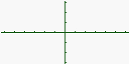

Ce tuto s'adresse spécialement aux utilisateurs expérimentés de la célèbre calculatrice CASIO. Si vous avez déjà quelques connaissances en programmation de Casio, ce tuto vous apportera tout le nécessaire pour effectuer des graphismes pour vos futurs jeux. :p
Avant de commencer à vous parler de programmation pure et dure, je vais vous dévoiler les possibilités offertes par votre calculatrice Casio en matière de graphismes pouvant être implantés dans vos programmes personnels.
Grâce à ce tuto, vous allez pouvoir faire plusieurs petites choses sympathiques :
afficher du texte ;
créer des points / droites ;
créer des courbes en tout genre ;
sauvegarder vos graphismes.
Dans ce tuto, je vais vous expliquer une à une chacune de ces techniques et comment les utiliser (grâce à plusieurs exemples d'utilisation). Suivra un petit TP, le genre de choses, chers Zéros, que vous adorez ! ;)
Avant de commencer
Si vous regardez l'écran de votre calculatrice de très très très très près, vous pourrez peut-être apercevoir qu'il est divisé en de tous petits carrés que l'on appelle PIXELS.
Quand votre calculatrice s'allume, certains de ces pixels "s'allument" pour former une image. Tout bêtement ! :)
Maintenant, essayez de compter combien il y a de pixels en largeur et en hauteur... Hum... je reviens, je vais me faire un p'tit café ! :p
Ça y est ? Vous avez réussi ? Comment ça, « non » ? Bon allez, je vous file la réponse :
Largeur : 127 pixels Hauteur : 63 pixels
C'est important de comprendre ce principe de pixels car ce sera très utile par la suite... On commence ?
Cette étape est la plus importante ! Si vous avez fait un minimum de mathématiques, vous avez appris l'existence des repères géométriques.

Repère géométrique (Par contre, je suis nul en dessin, hein ? ^^ ) Ce outil est indispensable lorsqu'on veut travailler avec des coordonnées, ce qui va être notre cas. L'initialisation de l'écran consiste donc à créer un repère à l'aide de la commande ViewWindow. Simple, non ?
Allez, on se lance !
Syntaxe de ViewWindow
ViewWindowXmin, Xmax, Xscale, Ymin, Ymax, Yscale
ViewWindow : SHIFT / F3 / F1
Xmin : valeur numérique minimum de l'axe des abscisses.
Xmax : valeur numérique maximum de l'axe des abscisses.
Xscale : valeur numérique du "pas" sur l'axe des abscisses.
Ymin : valeur numérique minimum de l'axe des ordonnées.
Ymax : valeur numérique maximum de l'axe des ordonnées.
Yscale : valeur numérique du "pas" sur l'axe des ordonnées.
Pour mieux comprendre toutes ces propriétés...
Application
Tapez ceci dans un nouveau programme :
ViewWindow 1,127,0,63,1,0
Vous pouvez donc tester votre programme maintenant ! Mais ce qui s'affiche n'est pas très glorieux. :(
En théorie votre écran devrait s'afficher comme ceci :
Bof, bof...
En fait votre ligne de code n'a fait que créer le repère et c'est normal que rien ne s'affiche. :p Mais si vous ne faites pas correctement cette étape-là, impossible de dessiner quoi que ce soit plus tard !
Les Plot, ce sont en fait des points (à ne pas confondre avec pixels !). Nous avons vu comment créer le repère et maintenant, nous allons afficher des points ! Excitant, non ? ^^
La seule chose qu'il faut savoir, c'est que comme en mathématiques, les points sont caractérisés par leurs coordonnées (X,Y).
Pour afficher un point, Casio propose 3 fonctions : PlotOn, PlotOff, PlotChg.
PlotOn
Permet d'afficher un point dans le repère.
PlotOff
Permet de supprimer un point du repère.
PlotChg
Si le point est déjà affiché, celui-ci disparaîtra. Dans le cas contraire, le point apparaîtra ! (Très utilisé dans les jeux.)
Syntaxe d'utilisation
Ces 3 commandes sont accessibles en appuyant sur SHIFT / F4 / F6 / F1. De plus leur syntaxe est exactement la même : commande X,Y Soit :
PlotOn 15,15 PlotOff 15,15 PlotChg 15,15
Application
Allez hop ! Un petit exercice pour voir si vous avez bien compris (c'est assez simple quand même :p ). Créez un point de coordonnées (25,15).
ViewWindow 1,127,0,1,63,0 PlotOn 25,15
Voilà ce qui devrait s'afficher en exécutant le programme :
Chouette ! Un point !
Comme c'est exactement la même syntaxe pour les deux autres commandes, je ne m'y attarderai pas plus longtemps. Si vous avez un problème quelconque, envoyez-moi un message privé. ^^
Mes points s'affichent très lentement ! C'est normal ?
En effet, ne perdez pas de vue que votre calculatrice n'est pas un ordinateur ! Sa vitesse d'exécution est très faible par comparaison.
Alors comment faire pour créer une ligne rapidement ?
Il existe en fait plusieurs techniques pour afficher plus vite une ligne. Casio met à disposition 2 commandes particulièrement efficaces : Line et F-Line.
Utilisation de Line
La fonction Line permet de relier deux points pour créer une ligne. Essayons donc...
ViewWindow 1,127,0,1,63,0
PlotOn 25,15
PlotOn 33,15
Line
Exécutez le programme
Mais... ça ne marche pas ! Les deux points s'affichent mais je ne vois pas de lignes... :(
Eh oui... Line requiert de créer des points avec une autre fonction que PlotOn : Plot. Ne me demandez pas pourquoi, c'est vrai que je trouve ça assez stupide. Peut-être pour faire une distinction avec PlotOn...
Bref, essayons !
Plot : SHIFT / F4 / F6 / F1
Line : SHIFT / F4 / F6 / F2 / F1
(La syntaxe de Plot est la même que celle de PlotOn, heureusement !)
ViewWindow 1,127,0,1,63,0
Plot 25,15
Plot 33,15
Line
Voilà ce qui devrait s'afficher :
Ouahh !! Une ligne !
Utilisation de F-Line
F-Line possède un avantage énorme sur Line. En effet, je vous donne sa syntaxe et vous comprendrez pourquoi immédiatement ! :p
Syntaxe d'utilisation
F-LinePt1X,Pt1Y,Pt2X,Pt2Y L'utilisation de Line nécessite 3 lignes alors que F-Line permet de créer les deux points et de les relier immédiatement en une seule ligne !
F-Line : SHIFT / F4 / F6 / F2 / F2
Application
Faites le même programme que pour Line. À vous de jouer ! ^^
ViewWindow 1,127,0,1,63,0 F-Line 25,15,35,15
Comme Line, F-Line affiche une ligne
Voilà à peu près tout ce qu'il faut savoir sur la création de lignes.
Je vais finir par deux fonctions bien utiles : Horizontal et Vertical. Elles permettent de tracer une ligne sur toute la longueur (ou hauteur) de l'écran.
Horizontal
Horizontal permet de tracer une ligne sur la largeur de l'écran.
Syntaxe d'utilisation
Horizontal positionY
Horizontal : SHIFT / F4 / F6 / F5
Application
ViewWindow 1,127,0,1,63,0
Horizontal 15
Ce qui affiche à l'écran :
Une belle droite horizontale ;)
Vertical
Vertical permet de tracer une ligne sur la hauteur de l'écran.
Syntaxe d'utilisation
Vertical positionX
Vertical : SHIFT / F4 / F6 / F4
Application
ViewWindow 1,127,0,1,63,0
Vertical 110
Ce qui affiche à l'écran :
Une belle droite verticale ;)
Vous êtes devenu des pros des lignes ! Et tout de suite :
Comment ça, on peut afficher du texte sur un graphique ?
La réponse est oui ! Sinon je ne vous en parlerais pas. :p
Et c'est même beaucoup plus esthétique que d'afficher un texte "normal" ! Un deuxième avantage est que la fonction utilisée est très rapide.
Pour cela, Casio nous propose la fonction Text.
Syntaxe d'utilisation
Text PxlX,PxlY,"votre texte"
Text : SHIFT / F4 / F6 / F6 / F2
Principe de fonctionnement
Il faut savoir que cette fonction est un peu spéciale, car elle n'utilise pas le système de coordonnées (vu jusqu'ici) mais le système de pixels (j'en ai un peu parlé dans l'Avant-propos).
Un p'tit schéma vaut mieux qu'un long discours, non ? ;)
Principe des pixels
On essaye ? C'est parti ! :p
Application
ViewWindow 1,127,0,1,63,0
Text 15,30,"Bonjour les ZEROS !"
Exécutez le programme Voilà ce qui devrait s'afficher :
Sympathique n'est ce pas ? ^^
Eh bien voilà ! C'en est fini pour le texte... Ce n'était pas si dur, hein ? :p Quand à moi, je vais devoir vous quitter, car je dois continuer ce tuto, qui, j'espère vous aura plu.
N'hésitez pas à le commenter !
... ... ... ... ... Rflll... Rhhflll... Zzzz... hmm... Hein ? Vous voulez quoi, encore ? ... un QCM ? Je suis trop gentil, tiens... :D
En avant pour le QCM !!!
J'espère vous avoir aidés ! :p Sur ce, bonne prog !